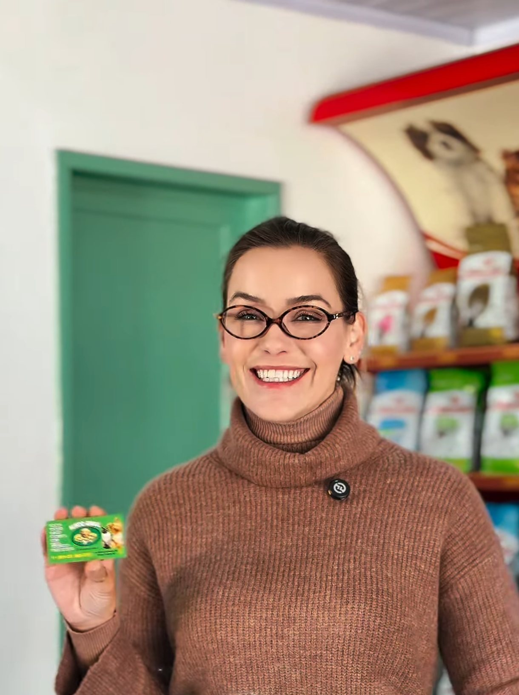
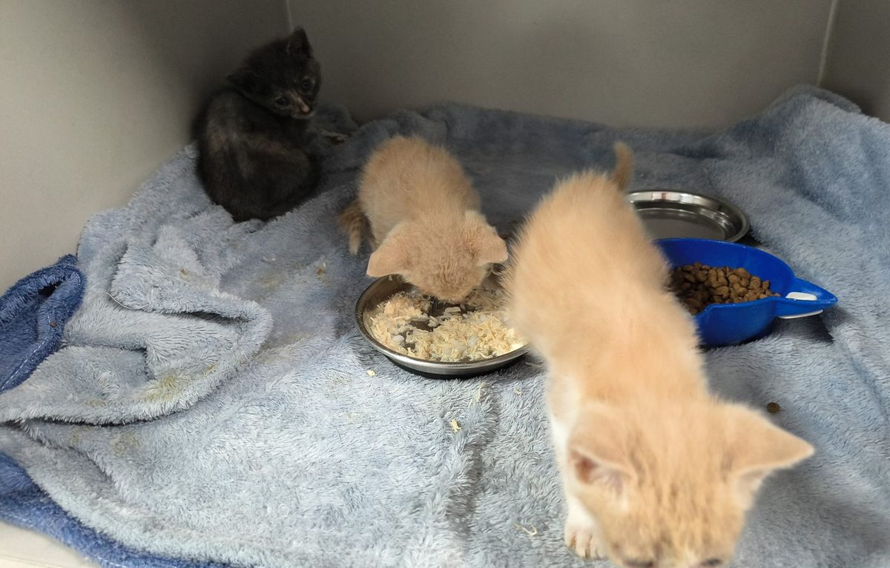
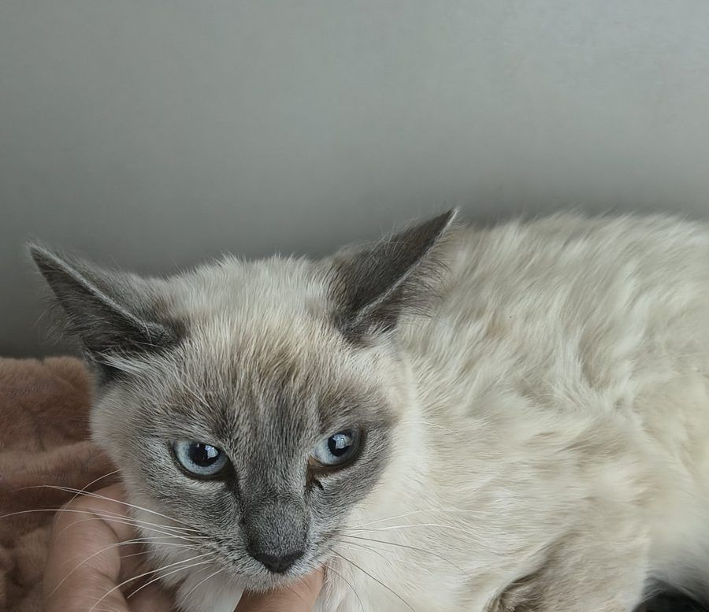
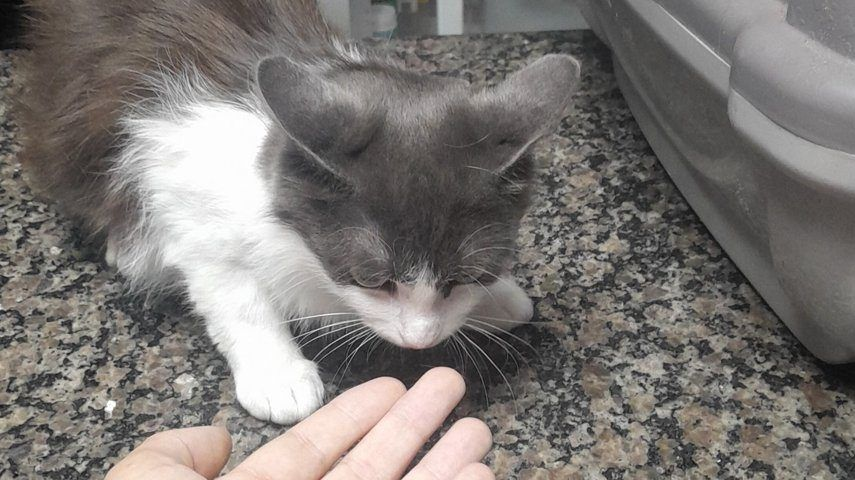
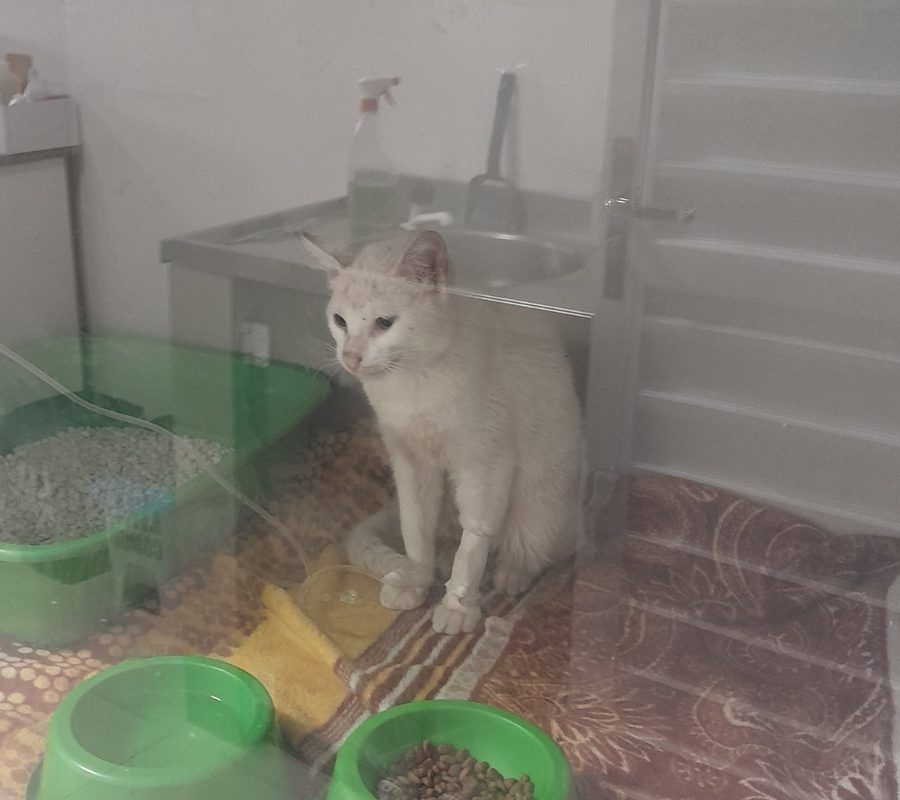
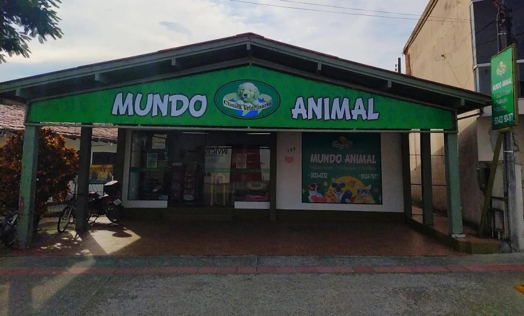

Quem é da família é cuidado aqui.
Clínica veterinária e pet shop no centro de Sombrio, desde 2005. Consulta, vacina, exame, cirurgia e banho e tosa no mesmo endereço.
Prefere ligar? (48) 99924-7977

- Exames de sangue feitos na clínica
- Raio-X e ultrassom sem sair daqui
- Internação para quem precisa ficar
- Banho e tosa com hora marcada
- Busca e entrega do seu pet
Black Friday
Ofertas na clínica e no pet shop, por poucos dias. até 30/11? a confirmar
- Rações e petiscosoferta a confirmar
- Medicações e antipulgasoferta a confirmar
- Banho e tosaoferta a confirmar
Vídeo da Black Friday
o reel gravado pela clínica entra aqui
O que o seu pet precisa hoje?
Toque numa opção. A mensagem para a clínica já sai pronta, com o que a equipe precisa saber.
As orientações acima precisam ser revisadas pela veterinária antes de publicar.
Serviços
Da consulta ao banho, tudo no mesmo lugar.
Clínica veterinária
- Consultas
Clínica geral para cães e gatos.
- Vacinas
Calendário completo, inclusive contra a gripe canina.
- Exames laboratoriais
Hemograma e bioquímico feitos na própria clínica.
- Raio-X e ultrassom
Imagem na própria clínica, sem precisar levar o pet a outro lugar.
- Cirurgias
Das mais simples às mais complexas, com todo o cuidado e monitoração.
- Especialistas
Vários especialistas cadastrados na clínica, em áreas como quimioterapia e ortopedia. outras áreas a confirmar
- Internação
Soro, medicação e acompanhamento da equipe para quem precisa ficar.
Pet shop e estética
- Banho e tosa
Usamos os melhores shampoos, condicionadores e perfumes, com hora marcada.
- Busca e entrega
A gente busca sujinho e devolve limpinho.
- Rações e petiscos
Todas as linhas de ração para cães e gatos, além de petiscos.
- Medicações
Para todas as situações, protegendo o seu pet de várias formas e em opções que cabem no seu bolso.
- Roupas, caminhas e brinquedos
Coleção de inverno, tricô, mantinhas e areia para gatos.
Por dentro da clínica
Toque numa foto para ver maior.
Fotos dos ambientes: algumas cedidas (2025), outras do estágio (2026). Antes de publicar, a clínica escolhe as que prefere ou tira fotos novas.
Quem cuida do seu pet
Quem atende você e o seu pet na clínica.
- Tamiris função a confirmar
- Dra. Cláudia Helena Bratti da Silva Médica veterinária, clínica geral CRMV-SC a confirmar
- Dr. Rangel Ramos Cardoso Médico veterinário, fundador e cirurgião CRMV-SC a confirmar
Cada pessoa precisa autorizar o nome e a foto no site. Fotos de rosto dos veterinários: a tirar.
Cliente da casa ganha mais
- Cartão fidelidade. Peça o seu no balcão: a cada visita, um carimbo. regras a confirmar
- Vacinação em dia, primeiro banho por nossa conta. Com o protocolo vacinal completo, o primeiro banho é grátis. ainda vale?
Pet do dia
Depois do banho, a foto vai para o Instagram. Siga para ver os pacientes e as novidades da loja.
Seguir @mundoanimal_sombrioSeguir no Instagram



Fotos de exemplo, do estágio. No site publicado: fotos do Instagram da clínica, com autorização dos tutores.
Agendar horário
Escolha o serviço, o dia e o horário. A clínica confirma pelo telefone que você deixar. Prefere conversar? Agende pelo WhatsApp.
Pedido de horário feito
A clínica confirma pelo telefone que você deixou. Para garantir, envie também pelo WhatsApp.
Dúvidas frequentes
Quais vacinas o meu cachorro precisa?
Em geral, a polivalente (V8 ou V10) e a antirrábica, com reforço todo ano. Filhotes tomam uma série de doses. Também há a vacina contra a gripe canina. A veterinária monta o calendário certo para o seu cão.
E o meu gato, precisa de vacina?
Precisa, mesmo que não saia de casa. A veterinária indica quais vacinas e quando. A clínica também faz o teste rápido de FIV e FeLV.
Meu gato tem uma ferida que não fecha. O que eu faço?
Traga-o para avaliação. Feridas que não cicatrizam em gatos podem ser esporotricose, que também passa para pessoas. Até lá, use luvas para mexer nele.
Precisa de jejum para exame ou cirurgia?
Alguns exames de sangue e toda cirurgia pedem jejum. A clínica orienta o preparo quando você agenda.
Vocês buscam o pet em casa?
Sim, para o banho e tosa: a clínica busca e leva de volta. Combine o horário e o endereço pelo WhatsApp. área e valor a confirmar
Como agendo o banho e tosa?
Aqui mesmo no site, em Agendar horário, ou pelo WhatsApp. Diga o porte e o tipo de pelo para a clínica reservar o tempo certo.
Respostas a escrever ou revisar pela veterinária antes de publicar.
Venha nos visitar
- Endereço
- Av. Antônio Sant'Helena, 165, Centro
Sombrio (SC), 88960-000 - (48) 99924-7977
- Telefone
- (48) 3533-4232 confirmar
- Horário
- Segunda a sexta: 8h às 12h e 13h às 18h
Sábado: 8h às 12h
Veja as avaliações no Google conferir o perfil
Av. Antônio Sant'Helena, 165
Centro, Sombrio (SC)

Desde 2005 no centro de Sombrio
Começou como um consultório pequeno, porque era disso que a região precisava.
A Mundo Animal foi aberta em 2005 pelo médico veterinário Rangel Ramos Cardoso. Cresceu junto com Sombrio e hoje reúne clínica, exames, internação, banho e tosa e pet shop no mesmo endereço, cuidando com carinho dos cães e gatos de quem chama eles de família.
Texto a aprovar pelo Rangel antes de publicar. No Instagram a clínica diz "22 anos"; desde 2005 são 21. Confirmar o ano de abertura.